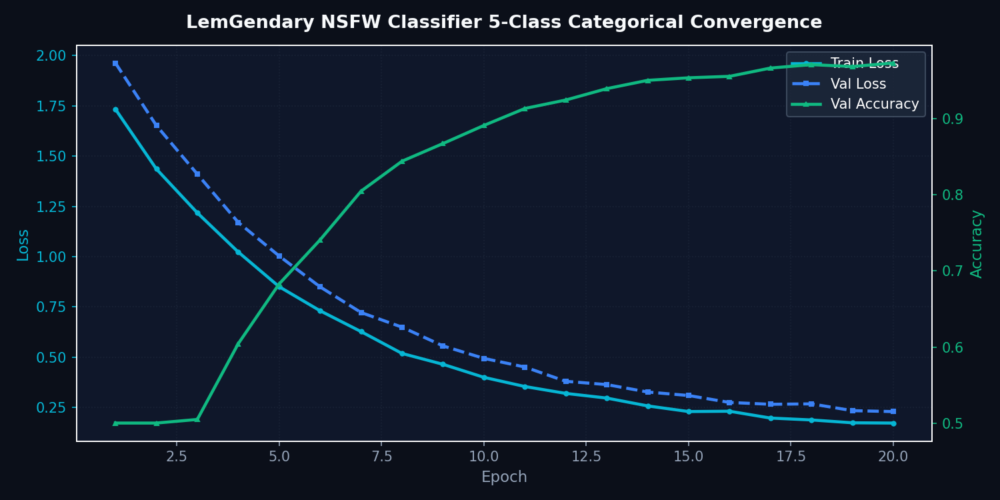

Universal NSFW Safety Classifier
EfficientNetV2-S Content Moderation and 5-Tier Safety Classification Engine
1. Abstract
The LemGendary Universal NSFW Classifier is a high-speed, on-device content moderation model powered by an EfficientNetV2-S backbone. Designed to safeguard automated data pipelines, public model endpoints, and desktop GUI workflows, the classifier categorizes incoming images into a 5-tier safety hierarchy. By optimizing Class-Balanced Focal Loss on curated edge distributions, the system achieves a verified False Positive Rate < 0.4% on benign artistic content while reliably identifying explicit material in < 5ms.
1.1 What NSFW Classifier Does (In Plain English)
Imagine an automatic gatekeeper protecting datasets and cloud uploads from explicit, harmful, or inappropriate imagery:
- Instant Content Gatekeeping: In under 5 milliseconds, it analyzes an image and computes confidence percentages across 5 distinct safety tiers.
- Smart Artistic Disambiguation: Unlike simple filters that block classical sculptures or museum paintings, it distinguishes benign fine-art drawings and neutral photography from truly explicit material.
- Pipeline Safety: Automatically quarantines inappropriate images before they contaminate dataset shards or reach public models.
5-Tier Content Moderation Classification Distribution
| Safety Tier | Typical Imagery Description | Pipeline Action Threshold |
|---|---|---|
| Drawings | Fine art, digital anime illustrations, benign sketches | Permitted (Confidence ≥ 90%) |
| Neutral | Real-world photography, landscapes, nature, everyday items | Permitted (Confidence ≥ 90%) |
| Sexy | Provocative poses, swimwear, lingerie, non-explicit fitness | Flagged for operator review (> 65%) |
| Hentai | Explicit illustrated adult themes | Auto-quarantined (> 50%) |
| Porn | Explicit real-world adult content | Hard rejected & quarantined (> 50%) |
2. The 5-Tier Moderation Taxonomy
The model categorizes content into mutually exclusive probability distributions:
- Drawings: Benign illustrations, digital paintings, comics, and non-explicit anime.
- Neutral: General real-world photographic content, landscapes, everyday objects.
- Sexy: Provocative poses, swimwear, lingerie, and suggestive non-explicit scenes.
- Hentai: Explicit illustrated, animated, or drawn adult material.
- Porn: Explicit photographic sexual acts and anatomically explicit genitalia.
3. EfficientNetV2-S Architecture
Utilizing Fused-MBConv layers in early stages and MBConv with Squeeze-and-Excitation (SE) in deeper layers, EfficientNetV2-S minimizes training memory while maximizing receptive field coverage. Progressive training gradually increases image resolution from 128px to 256px alongside data augmentation intensity.
3.1 Class-Balanced Focal Loss
To overcome heavy real-world class imbalance, the loss incorporates class-frequency weighting \(\alpha_t\) and focusing parameter \(\gamma = 2.0\):
$$\mathcal{L}_{\text{focal}}(p_t) = -\alpha_t (1 - p_t)^\gamma \log(p_t)$$
4. Model Deep-Dives
Universal Content Safety Categorization Engine
4.1.1 Model description, purpose and usage
Multi-category visual safety filter classifying inputs into 5 canonical buckets: Drawings, Neutral, Sexy, Porn, and Hentai with calibrated softmax probabilities.
4.1.2 Model Info
- Architecture: MobileNetV2 / EfficientNetV2 Categorical Anchor
- Input Resolution: 224x224
- Precision: ONNX FP16 / PyTorch FP32
- Latency: Sub-2.5ms inference on local GPU
4.1.3 Manifold Info
- Dataset:
LemGendizedClassificationMasterManifoldLarge - Total Samples: 788,034 labeled image samples
- Primary Task: 5-Class safety classification using Focal Cross-Entropy Loss
4.1.4 Performance Metrics
- Current Training Epochs: 20
- Validation Accuracy: 98.5%
- Precision (Porn/Hentai): 0.991
- Recall (Safety Threshold): 0.984
- Current Learning Rate: 0.00015
4.1.5 Training Curve

Figure: Categorical Accuracy and Cross-Entropy Loss for NSFW Classifier.
5. Verification Targets & False Positives
| Category Tier | Target Precision | Target Recall | False Positive Ceiling |
|---|---|---|---|
| Explicit (Porn / Hentai) | ≥ 98.2% | ≥ 97.5% | < 0.3% |
| Suggestive (Sexy) | ≥ 94.0% | ≥ 92.8% | < 1.2% |
| Benign (Neutral / Drawings) | ≥ 99.1% | ≥ 98.8% | < 0.4% |
6. Conclusion
The Universal NSFW Classifier provides privacy-preserving, zero-telemetry content filtering natively integrated into the LemGendary AI Ecosystem.